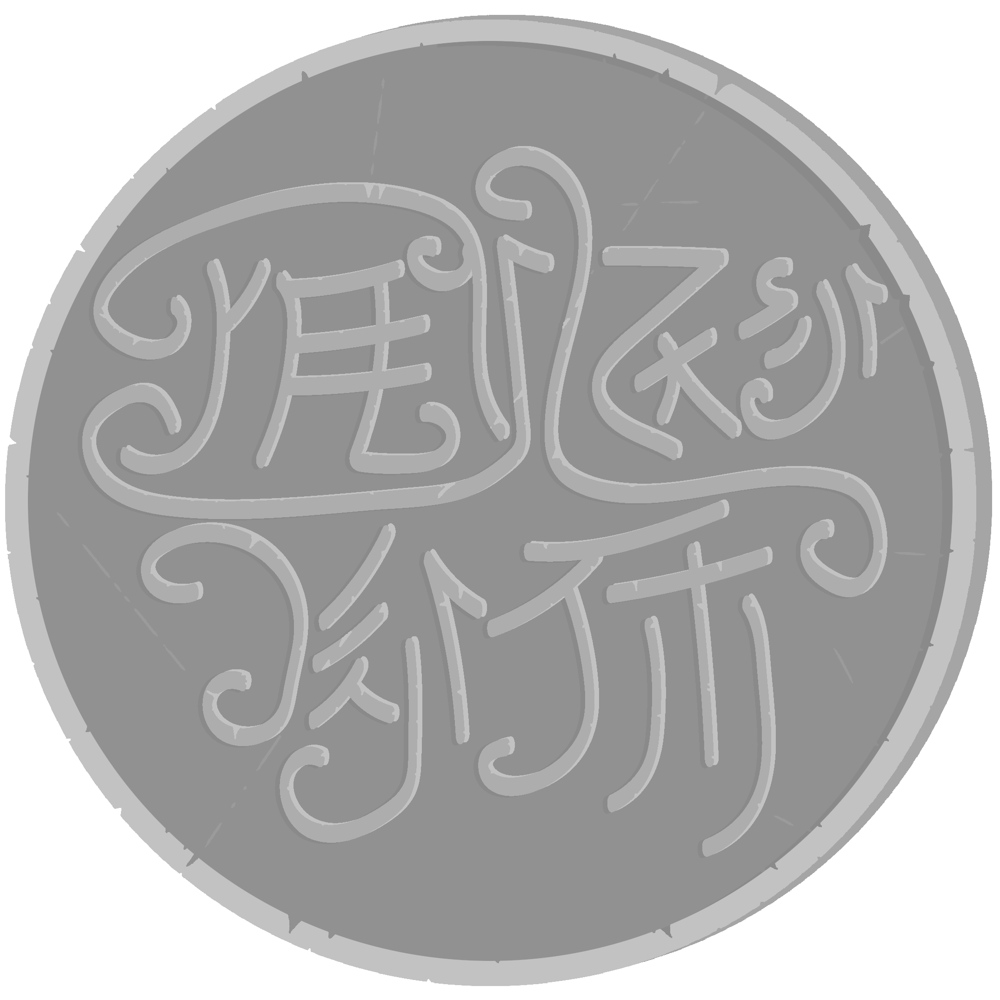

By the time I had sloughed my coat onto my bed at the Eonóll Inn and stepped back out into the commons, Khal had descended from his room and settled back into the seat beside the hearth. I fetched two drinks from Liam and brought them over. Khal clutched his in both hands, resting the mug on his stomach. I set mine upon the table beside us as I prepared my ink and quill.
— You must be thinking, he said, that this all happened rather quickly.
— I’m accustomed, I said, leaning my satchel against my chair. These things never are as slow and drawn-out as the stories make them. But I am curious. You said Dema, Theryn, and Luin all appeared in one night.
— Strange things come in threes, that is what my mother told me. Khal smiled to himself and took a sip. But there was a reason that it all came to pass so quickly. I imagine Theryn and Luin agreed to stay only because I was there. Dema had little reason to fear.
I rapped my finger on the edge of the page. I don’t follow.
— They were pursued, Khal said.
— By the huntsmen. I traced the line I had recorded the night before, where he had mentioned the Runic Order. Theryn worried that they would find you, no?
— A huntsman trailed them, yes, but he was not the only one scouring those forests. I will explain, but first…. Khal buried a hand in his pocket and produced a coin which he set upon the table between us. Take it. Tell me what you see.
It was old, by the wear along the edge, from a time before they had begun casting coins. This one had been hammered into shape, and a symbol had been set into the metal through pressure, leaving it faint and difficult to read. The stench of iron lingered on my fingertips as I set it back upon the table.
— It is from the south, I said. From the Valkons, no? Quite old.
— Eleven thirty-one. That is the year. It is from the Hart.
— I’m afraid I’m not seeing what you must want me to.
— Along the edge. Khal flicked a hand at the coin.
I dragged a finger over the surface and found a series of words indented into the metal, only barely legible even with the light of the hearth to aid me. The script was ancient—drawn from the tongues of Kyer, in the east, and brought here by the early settlers of Alvyria. It read:

— You wouldn’t be able to translate it, would you?
— ‘Metir Keviv, the Heart of Alvyria,’ Khal said. Have you ever been?
The coin shone with flecks of red in the grooves, and a coat of arms upon the upturned face wore the blade and star of the old kingdom of the Valkons which had once ruled over all the realms. I kneaded my brow a moment, then shook my head.
— No, I haven’t had the chance. Have you?
Khal’s eyes widened for half a second, but I could not discern the meaning behind his look. After a moment, he turned gaze back to the flames. I have, he said, when I was younger. We will get there, eventually. Well, that was my only question. He dragged the coin off the table and buried it in his breast pocket. I suppose we can continue then, if you would like.
— I would, very much.
Khal propped his head on a curled fist and stared at the mantle. His brow tightened, and his eyes sharpened. In the sheen along his irises I caught the flames licking at the logs, flickering as in the reflection on a glass pane; in his skin, the light faded into the faint suggestion of a smile along his cheeks. And then he shifted.
— We traveled on, towards Vómakháll, he said, until at last we arrived at a town they call Lésh-tí-Krehereul. Father was otherwise occupied with matters when Theryn and Luin finally came to our wagon, and I was seated in the back with mother when we heard the rap of Luin’s walking stick upon the wheel.
Mother glanced up. A few rays of sunlight peered through holes in the wagon’s canvas cover, illuminating half her face—her eyes darted between me, bundled in my blankets across from her, and the flap at the back of the wagon where the silhouettes of two figures shone through the canvas. Her jaw was stiff. She shifted from her seat. With one hand on my shoulder, she reached to the flap and flung it open.
Luin nodded. Theryn gave something akin to a bow. They were garbed in their usual cloaks, but Theryn had shed the sword and Luin his bandoliers, leaving them little more than unassuming travelers, save for the quality of the fabrics and their groomed beards. Luin clutched his staff in one hand and extended the other to Mother, who shook it with a firmness I found strange, even at that age.
“You awoke awfully early,” she said. “I had expected to have to rouse you so that we could get moving with the dawn.”
“We’re well-acquainted with the traveler’s life. Up with the dawn, down with the dusk, all that.” Luin patted his companion’s shoulder and chuckled. “We thought we’d come around to talk to you about your son. Theryn and I—well, I know we’re strangers, but you and your husband are well-traveled, and I’m sure you’ve gathered the nature of our visit. I don’t doubt it.”
“Aye, I have,” Mother said. She turned to look at me for a moment before returning to the two strangers. “Why don’t you come up inside so we can talk.”
The two men leaned their staffs on one of the wagon’s wheels and clambered up inside. A chest hunkered beneath the driver’s seat, at one end of the wagon, and at the other a low shelf held our shoes. Between, there were bundles of clothes and blankets and all manner of trinkets from our travelers, but mostly there were those things we needed for everyday life and little more.
Rags were hung on hooks nailed into the beams that held up the canvas walls, and pots and pans dangled on strings looped over them overhead, forming culinary chimes that jostled about as Theryn and Luin took seats amidst the blankets across from us. They seemed smaller now, inside with us, and it struck me that Luin was little taller than either my mother or myself. Theryn, on the other hand, was only slightly less formidable. The tip of his hood scraped the canvas ceiling, and he had to bow down to keep from butting his head on the pans wheeling overhead.
“You have it all in here, don’t you?” Theryn said, rummaging through the blankets that were to serve as his seat. He set my book on the driver’s seat and gave me a knowing grin. “I was wondering what was biting into my ribs last night. So you’re a Klavik reader as well. I’ve always preferred Sunen myself.”
“It’s his father’s actually,” Mother said, “or it was originally. He brought it from Keirigan when he joined us.”
“I’ve read it.” I nodded with some defiance. “It’s my favorite book.”
Mother gave a humored grin and rustled my hair. “I bet it is.”
“Well,” Luin said, “we have a great many books like it, back home.”
“Where is your home?” Mother asked. “Last time we spoke, you weren’t exactly settled, and I find it hard to believe you’ve set down roots in some quiet little town somewhere.”
Luin shared a glance with Theryn. “You’re not entirely wrong,” he said. “We came from the north. Far north. In the Hinterlands, there is an archive which we call home. There are more like us there.”
Mother rested a hand on her chest. “It is safe there then?”
Luin nodded. There was quiet for a span of a minute before Mother spoke again.
“Khal,” she said, “why don’t you go find your father.”
I shifted in my seat. “But I—”
“Go.” Mother batted to the flap at the back of the wagon. “We won’t be long.”
I grumbled, staring daggers at the two men as I crawled over blanket and bag to the back of the wagon, then hopped out. My boots landed with a clap. Before I could turn to peek back inside, Mother had drawn the flap tight. I suppose I should not have been surprised. I was beginning even then to develop the sense that there was something more to my mother than I could have known. What exactly that entailed was still well beyond my grasp, and I cannot say it would be soon that I would begin to understand why she had sent me away then. In another story—or if I were feeling more dramatic—I might tell you of how I snuck beneath the wagon and listened in, but I was neither so brave nor so stealthy. Instead, I buried my hands in my cloak pockets and trudged off in search of my father, hoping that he would have the answers I sought.
Our road passed over ridge and slope towards Vómakháll, though now we were near enough to the coast that one could look out over the steep decline and see, far below, the scattered peninsulas and isolas that surrounded the mainland. Mount Vómakháll itself sits upon an island—the largest in the realm—though once it was one with the larger continent, now bridged only by a smattering of isthmi and smaller islands which we had passed over on our way here. A few seaside villages clung to the rocks, and a solitary castle stood over a nearby bay, stained white along its base by sea spray. We had left the forests behind now, for the most part. It was low brush and olive trees from here to the peak. Low brush, olive trees, and the scent of dust that swept up with the winds and made your throat prickle and your lips grow dry and white. I had hated this stretch of the journey since I was young—none of the beauty or the cold of the forests with all of the steepness of the mountains behind us.
I found Father stooped over a broken wheel, fitting a new spoke in with his mallet as another member of our caravan, Airen, stood beside him with his hands propped on his hips. Airen wore a long doublet beneath a jerkin of dark leather, new judging by the tightness of the stitchings and the vibrance of the embroideries sewn into the breast. He had joined our caravan just a few years ago. His wife, Shalan, was the daughter of our storyteller, though even I knew Lewen was less than thrilled when his daughter had announced her marriage to a southerner. Our families got along as well as any others, despite their status among the rest of the caravan.
“Oh, Khal, thought you were with your mother,” Airen said as I approached. “Well, I’m almost done with your beiyar. He’s good to have around with all the damned divets on this road.”
“Doubt it was a divet that broke your spoke, Airen.” Father gave the rod one last nudge with his mallet and it slipped into place. “It’s none of my business. I’ll fix a hundred spokes without complaint. But if I have to fix a broken bone, it’ll be a different issue. Yeah?”
Airen laughed, smoothing back his hair. “Alright, alright. I’ll be sure to be safe then.”
“You’d best.” Father slipped his mallet through a loop on his belt and stood. A clap of his hands sent dust swirling through the air. “Where’s mám, Khal?”
“Back at the wagon,” I said. “With those two ézrammi.”
“What’re they talking about?”
I shrugged.
Father gave Airen a pat on the shoulder and began down the road. He walked with none of the urgency I had expected, taking his time to greet the handful of other families we passed on the way. At Lána’s wagon, he stopped to trade news with her mother. I stood behind him all the while, wondering how he could leave Mother to deal with these two strangers alone. After he had finished and we were back on the road, I tugged at his sleeve. He gave me a humorous grin.
“What’s the problem, Khal?”
“Are they druids?” I asked. “Mom said they looked like druids.”
“I doubt it,” he said. “You don’t run into druids outside of the Riverlands. I’m not sure where they’re from, but they seem like nice fellows. We had a long talk, last night. Mother seemed interested in what they had to say.”
“So you’re not worried?”
“Worried?” Father ran a hand down the back of his neck and smirked. “No, Khal, I’m not worried at all. Besides, I’d prefer your mother be the one to talk to them. She’ll know what to say better than I ever could.”
I ruminated on his words a while, trudging along behind him. I wanted desperately to know what they had talked about, but I knew my father well enough to know he would tell me off if I asked too directly.
“What’s on your mind, Khal?” he asked, after a while. “Shéghava navá nólveth. Do not worry about your mother, she knows more about these matters than anyone.”
“I’m not,” I said. “Just confused.”
“We live in a confusing world.”
Father rustled my hair, then beckoned off the road. I stopped.
“But our wagon is that way.”
I gestured past the others to where ours sat, at the end of the caravan.
“Come on.” Father grinned at my distress. “Just a quick walk.”
“But mám—”
“Come on, Khal.”
He began down the dirt trail, into the tree line, picking his way over stone and bush. He was still young then—a head of bushy black and shoulders broad yet tender. He walked with a boyish gait and tossed a glance over his shoulder as a young man might look back to his friend, hesitant to head off the beaten path. I remember stuffing my hands in my pockets and trying my best to look determined. To look like the adult. He pinched his lips shut but a laugh sputtered through, and he called out.
“Come on, Khal. It’ll be fine.”
I gave one glance to our wagon. Another to him. Then I muttered under my breath and clambered down the slopes after him as he disappeared into the trees.
Our trail wound back a ways, into a pine grove that stood alone amidst the low brush of the coast. It was the last remnant of the forests we had left behind—cool beneath the canopy of needles overhead and filled with the scent of earth and sap. A breeze blew steady southward, whipping up my cloak, and the hairs on my skin stood on end.
Father marched ahead of me. His boots drummed over fallen leaves, and every now and then he looked back and laughed at the stubborn glare I had kept up since we’d left the road. I was determined not to enjoy this. Eventually, he snatched a branch off a tree and took to stripping off the twigs, tossing them over his shoulder at me as he went. One rattled at my feet. Another pricked me square between the eyes.
I kicked a pebble up the trail. It skidded and clipped his ankle, and he let out a mixture of a chuckle and a yelp. “Such an angry little buothév. Should’ve traded you for a changeling. Maybe he would’ve enjoyed his time with his father.”
“I want to go see mom,” I said. “Can’t we go back?”
“Patience, patience, little buothév.”
“Stop calling me that.”
“Does someone not like being called a buothév?”
I bunched my fists and turned my gaze to the dirt. Father snorted and returned to stripping his branch. “Paó shénaz séiv buothév baghóll. My son is a little gnome,” he sang. “Óm shéva av bághola nyív i bághounoll. He likes to sit and be angry at home.”
After a few more poorly-sung verses, I cut him off.
“Where are we going?”
“You’ll see.”
“But pa—”
“Khalkath,” Father said, halting. “Where does hurrying get you?”
I knew the answer he wanted, but I puffed out my chest and grinned at my own wit. “Where you’re trying to go.”
“I bet you think that’s terribly clever.” He beat his stick into the dirt a few times, then hunched over and gestured as if to stroke a nonexistent beard. He tightened his voice into a weary growl and wriggled his fingers as if casting a spell. “It gets you into trouble, young Khal. You need to learn to take your time. Every sorcerer’s apprentice must learn this, if he is to become a master.”
I tried my best to give my own father a disapproving look. “Pádhu….”
“Pé an ézra, Logain,” he said, shaking his head. “I am the wizard, Logain. I do not know who this father is, but he is no match for my sorcery.”
“Please, dad, can we go back?”
I turned to go, but at once father bolted into the trees, his cloak streaming out behind him. His silhouette darted between the pines, and he let out a mad cackle as he disappeared from sight. Leaves kicked up in his wake. Snow sloughed from the trees. Birds took to the sky.
I groaned. Surely there were more important things to be doing than running around like madmen through the forest, but I’d be sent away if I returned to our wagon without him, so I set aside my pride and trotted after him.
“Pa,” I said. “Please.”
“No pádhu here.” His voice echoed through the pines. I became aware of the trickling of water, and a faint dampness clung to the breeze. The pines were thick here, and they huddled lower to the earth. I had to take cautious steps over lumps of moss clinging to stumps and a few stray stones amidst the grasses.
I peered amidst the trees. “Where’d you go?”
“The branches of the ashen tree run through paths unseen.” Father’s voice had grown maniacal, and he strained not to laugh between each word. “Come to the clear waters, Khal, and I will show you something different from your shadow at dusk or dawn.”
I rounded one last bend in the trail and came upon the edge of a pond, fed by a series of falls that tumbled down an outcropping of rocks. The water shone clear; sunlight caught in the ripples along the shore; a school of minnows swirled about in the depths, their scales glinting a thousand hues as they hurried about beneath me. Quiet hung over the clearing—a thick silence save for the dribbling of droplets off the stone—and I sat for a moment staring out at the wake of water striders streaking over the surface. A rustle of leaves arose behind me.
“Father?” I turned around, searching the trees for movement.
A shape burst from the branches. A shoulder struck my chest. For a moment, the breath fled my lungs. I flew. Father’s arms braced me. He let out a laugh and lept with me in his arms. Out over the water. The pond drifted below my feet. Sunlight shimmered in the scales of the fish. Singing softly, slowly we fell, and the water licked at my toes, and I felt my lungs rise up into my throat and swell till I felt I might burst, and then with a smack and shower and the scream of spray over the rocks, we swirled into the depths of the pond. By the time I had clawed my way up to the surface, father had erupted into laughter, treading water beside me. His voice rang over the clearing. Trees quivered. The water lapped at the shore. I sputtered, then broke into laughter too.
Khal swirled his glass in slow gyres, watching the ale churn up a froth about the rim. We cleaned up, he said, and then sat on the bank for a time. He told me about my grandparents, from the Riverlands, and then about our old home across the sea. He told me of his youth in the streets of the Auroral City, and then he told me how he had met my mother.
I know now what he was trying to do, and part of me wishes I could have seen it then. But that would have ruined the illusion that he had worked so hard to conjure—the illusion that this was anything more than the last piece of advice he might ever give his son.